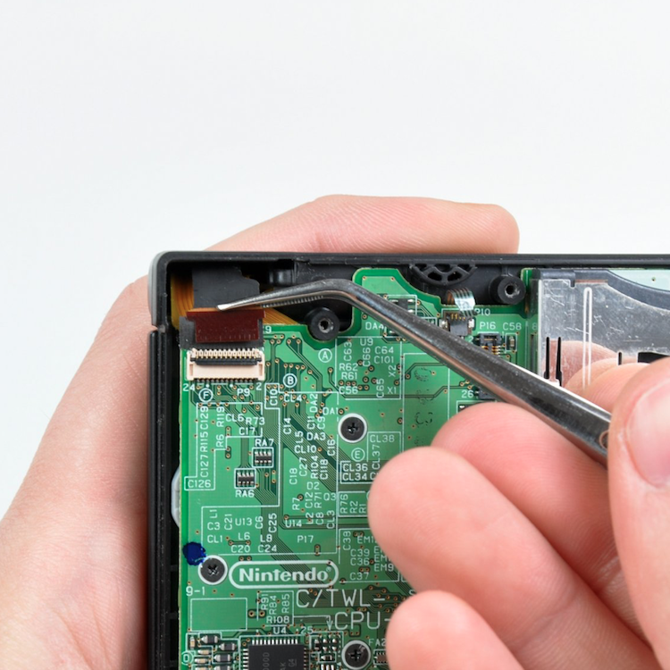

Description
The DSi crashes with "an error has occurred" when taking photos with the camera.This can happen if the camera is disconnected or damaged.
Solution
First try reseating the ribbon cable for the camera. It is the black cable going into the hinge.
If reseating the cable does not work, you will need to replace the cameras. I recommend these guides on ifixit for DSi and DSi XL.